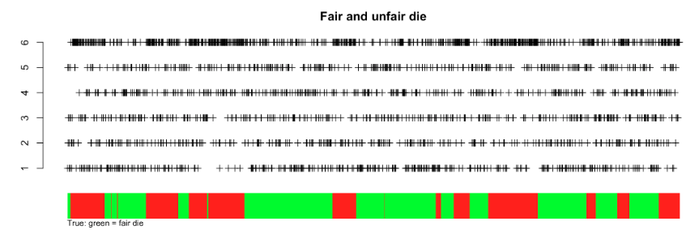
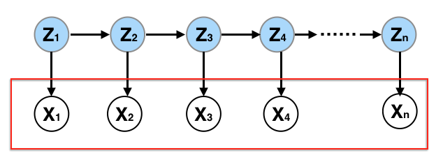
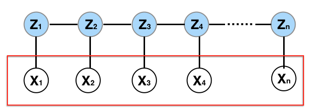

7.5. Hidden Markov Models
In this series, we delve into the Hidden Markov Model (HMM). While its applications span across numerous fields, I won’t dwell on its vast applications. I’d suggest a quick Google search to discover the fascinating applications of HMM.
7.5.1. Basics of HMM
In HMM, we sequentially observe \(X_1, \dots, X_n\). The distribution of these observed variables is influenced by a corresponding set of latent variables \(Z_1, \dots, Z_n\), which we do not observe. The latent variables, Zs, follow a Markovian process. Both X and Z can be continuous or discrete. HMM with discrete Z continuous X is often referred to as a State-space model. In our discussion, we’ll focus on instances where both X and Z are discrete. Nonetheless, the principles apply to continuous scenarios as well.
7.5.2. The Dishonest Casino Example
Consider an illustrative example from our code page: A deceitful casino uses two dice. One is fair, producing all numbers with equal probability, while the other is loaded, having a 50% likelihood of showing a six. Observers can see the roll results but don’t know which die is in play. Given this observed data, our objective is to infer the hidden state Z, which represents the dice being used - either fair or loaded.
Our algorithms can approximate when the loaded die was in play based on observed patterns. For instance, periods with a high frequency of sixes suggest the loaded die’s use. Once we understand the interplay between X and Z, we can even make predictions about future outcomes. In essence, HMM enables us not just to decipher hidden states but also to forecast future observations.
{kind=link}
7.5.3. Structure of HMM
To deepen our understanding of Hidden Markov Models (HMMs), let’s consider the process of generating one.
{kind=link}
- Determining Hidden States Z:
Initially, decide on the number of hidden states, represented by the variable Z. We use \(m_z\) to denote the unique values Z can assume. Analogous to selecting the number of clusters K in a mixture model, \(m_z\) serves as a tuning parameter. To determine its optimal value, one might employ model selection criteria.
- Determining Observable Values X:
We also need to understand the potential values for X. Hhowever, this isn’t a tuning parameter as it becomes evident upon observing the data. For our current discussion, we assume X is also discrete, taking \(m_x\) unique values.
- Initiating the Model:
Begin with an initial distribution \(w\), a probability vector of dimensions \(m_z \times 1\). This defines the distribution for the initial hidden state Z_1. Once Z_1 is generated, using the subsequent Z values (\(Z_2, Z_3, \dots\)) are generated.
- Markovian Process:
The essence of the Markovian property is that Z operates as a Markovian sequence. To transition from one Z value to the next, a transition probability matrix A of size \(m_z \times m_z\) is essential. In the casino example, A is a 2-by-2 matrix. Each row of A sums to one, reflecting the probabilities of transitioning between states.
- Generating Observable Values:
With the latent sequence Z in place, we generate X. Distinct distributions over X are denoted by the emission probability matrix, denoted by B (of size \(m_z \times m_x\)). Each row in B represents a probability distribution summing to one. Depending on the value of Z, an appropriate row from B determines the corresponding X value.
In essence, an HMM can be thought of as a clustering mechanism or a mixture model. It clusters the observed X values into \(m_z\) clusters, each with a distinct distribution. However, unlike typical clustering, due to the temporal nature of data (indexed from 1 to n), the X values aren’t independent. Their inherent sequential relationship necessitates modeling the latent variable Z, not as a simple random draw from some distribution but as a Markovian process.
7.5.4. Graphical Representation of HMM
Previously, in representing HMMs, I used arrows to illustrate the data generation process. Now, I aim to replace these arrows with undirected edges, where each edge indicates dependency. This shift aligns with HMM’s association with the broader category of statistical models called graphical models.
{kind=link}
- Nodes and Edges:
Each variable (both observed and hidden) in the HMM can be represented as a node in the graph. The presence of an edge (or link) between two nodes symbolizes a dependence between them.
- Conditional Independence:
In this graphical interpretation, the absence of an edge between two nodes (e.g., two observed variables like X1 and X2) means that they are conditionally independent, given all other variables.
For instance, the absence of an edge between X1 and X2 signals conditional independence, given all other variables. This assertion is intuitive since distributions of X1 and X2 are primarily dictated by their respective latent states, Z1 and Z2. With Z1 and Z2 conditioned, X1 and X2 are independent. Conversely, an edge between variables (like Z2 and Z3) implies dependency, even when conditioning on other variables. This conditional independence or dependence structure aids in factorizing the joint distribution of X and Z.
7.5.5. Key Parameters of HMM
\(m_z\) - the number of unique values Z can take.
\(m_x\) - the number of unique values X can take.
\(w_{m_z \times 1}\) - the initial distribution for Z_1.
\(A_{m_z \times m_z}\) - the transition probability matrix that models the progression from \(Z_t\) to \(Z_{t+1}\).
\(B_{m_z \times m_z}\) - the emission probability matrix, indicating how X is produced from Z.
7.5.6. Computational Challenges
Please refer to our videos for a detailed walkthrough on computing the four primary quantities associated with HMM.
- Forward Probability:
The forward probability \(\alpha_t(i) = p_{\theta}(x_1, \dots, x_{t}, Z_{t}=i)\) can be used to quantify the uncertainty of the latent state at time t, given all observed data up until that point. Calculating the marginal likelihood of the data under an HMM even if we know the parameters is non-trivial. However, it can be obtained by summing the forward probabilities at the final time point.
- Backward Probability:
This probability \(\beta_{t}(i) = p_{\theta}(x_{t+1},\dots, x_n | Z_{t}=i)\) represents the likelihood of observing future outcomes given the latent state at time ‘t’. It informs predictions or distributions on future data, provided we know the hidden state at time ‘t’.
- Parameter Estimation:
The estimation of HMM parameters is a crucial task, often achieved using Maximum Likelihood Estimation (MLE). Since direct computation is challenging, algorithms like the Expectation-Maximization (EM) algorithm (aka, the Baum-Welch algorithm) are employed.
- Latent State Inference:
Once we’ve estimated the parameters, our subsequent move is to infer the latent states using the observed data. To determine the most probable sequence of latent states Z, we employ the Viterbi algorithm.